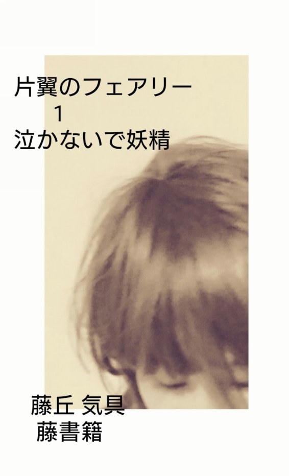

| 「片翼のフェアリー」 藤丘気具 1 「泣かないで妖精」 | |
| 藤丘 気具 & 藤書籍 | |
| (2017) | |
「片翼のフェアリー」
藤丘気具
1
「泣かないで妖精」

公園でくつろぐことが、
俺の一番の楽しみだった。
さわぐ子供たち。
椅子に座っていると
飛んでくるボール。
それを返してあげ、
お礼を言われた。
「......ありがとう」
こんなに爽やかな日々が、ずっと続けばいいな
と思う。
ふと、
ボールを返してあげた目の前の女の子が
転びそうになるのを見た。
その時。
......？
転んだまま立ち上がらない。
さっきまで他の子供達の中に居たのに、
気にかける子すら居ない。
......どうしたことだろう。
五分は経っている。
それでも倒れたままだ。
まずい、
何かの怪我、
発作が起きたに違いない。
すぐそばに行かなければ
――
！？
気が付いたとき目に映ったのは、
翼の生えた五人の
"何か"
？
倒れている一人だけが、
片方だけ翼がない。
「上級悪魔になれるわけでもない。
翼も失ったお前に用は無い」
「......」
「散々付きまといやがって。
悪魔でありながら天使みたいなんだよ、
お前！」
「おら！
これでもくらえ！」
起き上がろうとしたいるその子に、
水がかけられた。
「おい、聖水かよ。
怪我させる以外効くわけないだろ」
その子の肌には
擦り傷が付き、
傷から点々とした黒いものが宙に浮かんでいる。
「やめろ！」
何か分からないけど、
止めなくては。
あまりに可愛そうだ。
「！
人間が俺たちのことみえるのか......？」
「いや、
子供がいじめているように目には映ってるだろ。
引き上げるぞ」
気付くと、
子供四人が一人の倒れている女の子を、
怪訝に見ているのがわかった。
「誰？」
「こいつが鬼を嫌がるんだもん！」
「あーあ、
なんかおもしろくなくなっちゃった。帰る」
擦り傷のある女の子を置き去りに、
四人の子供が行ってしまった。
「うぅ......」
「大丈夫か。
傷、洗ってこようよ」
涙する女の子を立ち上がらせ、
水飲み場へと連れて行った。
(あの翼、
夢は、一体......？)
続く
